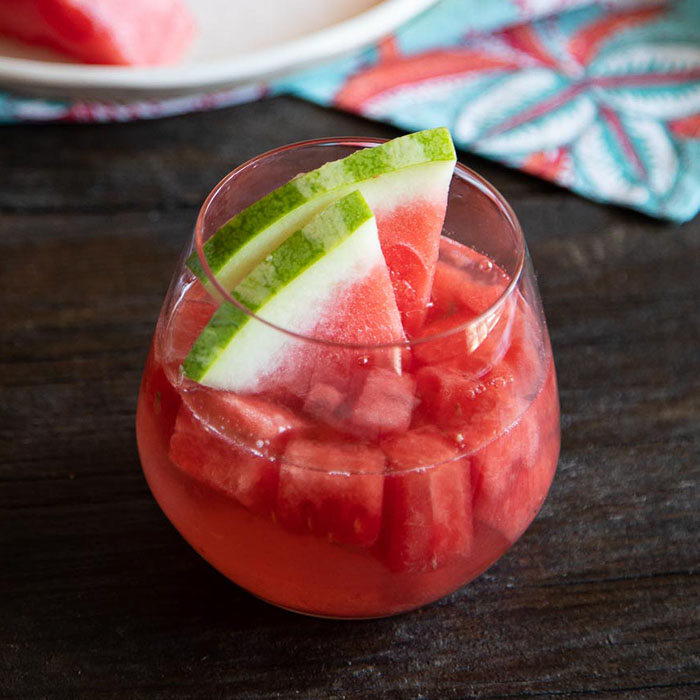

Watermelon Sangria Description and Ingredients!
Sangria is a punch made with wine. It’s traditionally a red wine mixed with fresh fruit and juices. Sangria, as we know it, is from Spain. The first sip we got in the U.S. was a red sangria at the 1964 World’s Fair in the Spanish Pavilion.
I can only imagine that was the busiest pavilion!
Ingredients
- 12 cups cubed watermelon, divided
- 1 (750 milliliter) bottle dry white wine
- 1 cup vodka
- ½ cup triple sec
- ½ cup simple syrup
- 1 orange, cut into wedges
- 1 cup fresh blueberries
- 1 medium lime, quartered
Steps
Here's just a brief overview of what to expect when you make home made lasagna!
- Place 9 cups of watermelon cubes in a blender.
- Blend on high until very smooth
- Strain juice through a mesh strainer into a large pitcher.
- Pour wine, vodka, triple sec, and simple syrup into the pitcher;
- Stir to combine.
- Add remaining 3 cups of watermelon cubes, orange sections, blueberries, and lime quarters; chill sangria for 4 hours before serving.